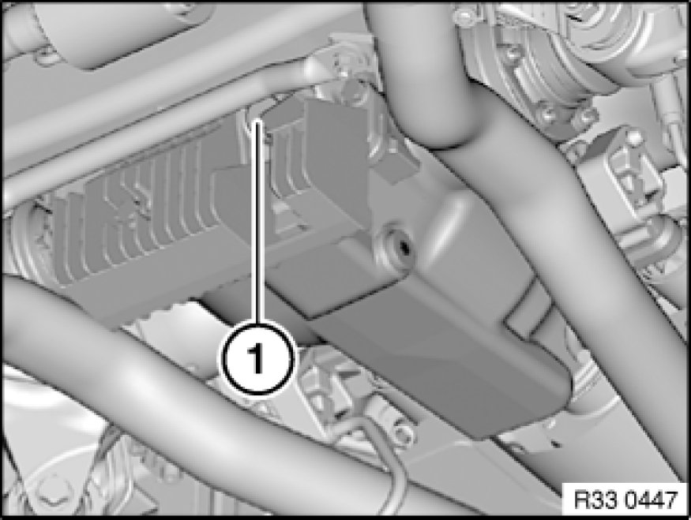

Checking/Topping Up Oil Level in Rear Differential
00 11 ... - Checking/topping up oil level in rear differential

Important!
Risk of damage!
To avoid serious damage to the rear differential, it is essential to use only approved gear oils in the differential.

Undo oil filler plug (1).
Check oil level.
If necessary, pour in rear differential oil up to lower edge of opening for oil filler plug (1).

Installation Note:
-A)
- Oil filler plug with sealing ring:
Replace sealing ring (1).
Tightening torque: 33 11 3AZ 33 11 Rear Differential Case with Cover.
-B)
- Oil filler plug with O-ring:
Replace oil filler plug (2).
Tightening torque: 33 11 9AZ 33 11 Rear Differential Case with Cover.